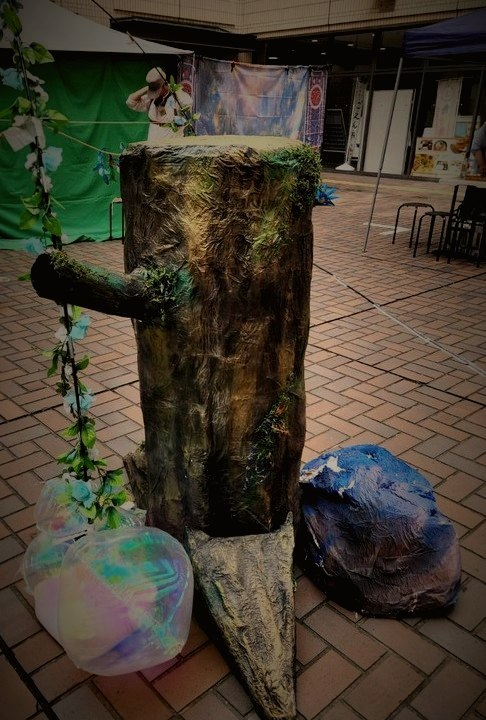
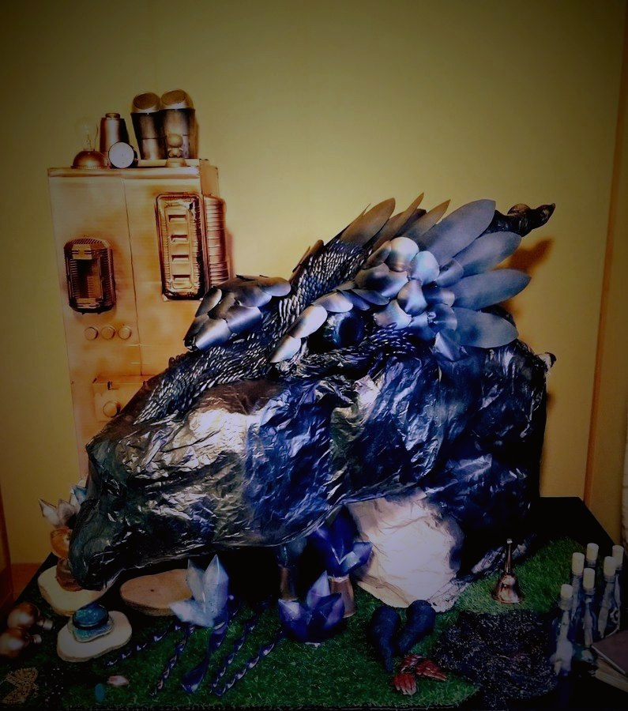
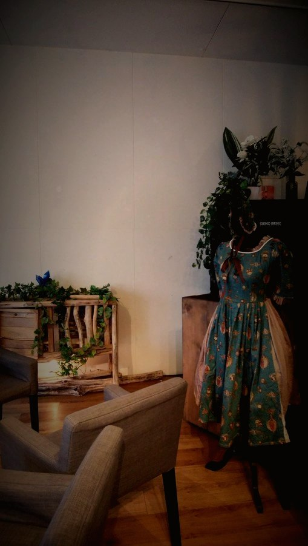

NOW OPEN
世界樹の日 2026冬
エネルギーと魔法の物語
12.5（土）–12.6（日）
九州電力 大分営業所大分市金池町／13:00〜17:00
入場 無料
予約 不要
幼児〜高校生とご家族
冒険者体験のみ 1,500円（各回20名）／ただいま参加者を募集しています。
I
世界樹の日とは？
大分で2019年から続く、子どものための没入型イベント
扉をあけると、
そこは物語のなか。
大分で、子どもが「冒険者」になる一日をつくっている団体です。2019年に始まりました。
受付で「冒険者の証」を受け取ると、会場のどこかで演じ手が声をかけてきます。困っている人がいる。失くしものがある。だから、あなたに頼みたい。見にきた人ではなく、物語の登場人物として——子どもたちはそうやって帰っていきます。
没入型イベントをつくる
会場ぜんぶを物語の舞台に変えます。演じ手、衣装、小道具、仕掛けまで手づくりです。
手を動かす体験をつくる
工作・実験・謎解きを物語のなかに編みこみます。作ったものは持ち帰れます。
まちと組んでつくる
商店街・企業・学校とともに、まちなかを回遊する仕掛けをつくります。地域の人が出演する側にまわる場も設けます。
II
世界のかけら
会場のしつらえは、すべて手づくりです



III
これまでの開催
大分市を中心に、年に数回ひらいています
2026.5みんなで創作体験！世界樹の日 〜子どもの日編〜トヨタカローラ大分 祝祭の広場ほか
2025.12謎解き＋没入型ワークショップコンパルホール 多目的ホール
2025.10謎解き＋没入型ワークショップコンパルホール 市民プラザ
2025.8創作ワークショップ（ポーション作り）大在公民館 工作室
2019.5第1回「世界樹の日」大分市／ギルド発足
IV
これから目指すこと
FANTASY CARAVAN
いつか、この世界を
持ち運べるように。
ギルドがいま取り組んでいることのひとつが「ファンタジーキャラバン」です。テントも、物語も、演じ手も、まるごと積んで次の街へ。開催のたびに組み上げてきた世界を、どこでも立ち上げられるようにしていく。大分ではじまった一日を、もっと遠くの子どもたちにも届けたいと考えています。
V
ギルドへの便り
出店・取材・イベントのご依頼はこちらへ
出店・取材・後援のご相談、イベントのご依頼など、お気軽にお送りください。数日以内にご返信いたします。
便りをお預かりしました
ありがとうございます。数日以内にご返信いたします。
返事が届かないときは、お手数ですがもう一度お送りください。